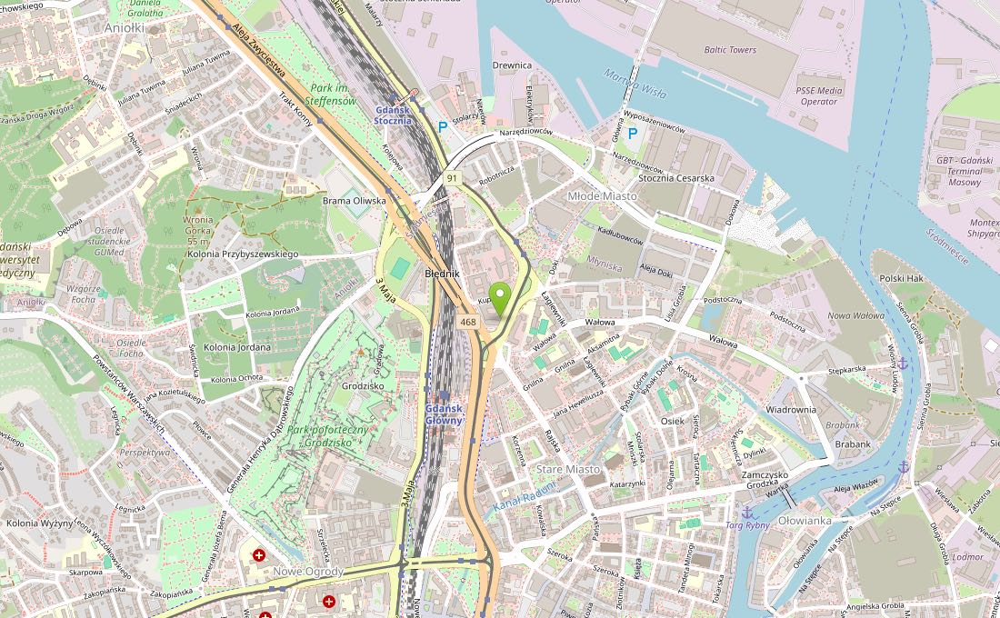

Kontakt
Masz pytania, wątpliwości, a może chcesz od razu zapisać się na kurs? Wybierz najwygodniejszą formę kontaktu: telefon, SMS, WhatsApp lub e-mail.
Zadzwoń WhatsApp biuro@osktailor.pl
Biuro i sala wykładowa (Zieleniak)
ul. Wały Piastowskie 1, lok. 508D (V piętro)80-855 Gdańsk
Centrum, 5 min od Dworca Głównego
Godziny pracy biura
Poniedziałek – piątek: 10:00 – 18:00
Sobota – niedziela: nieczynne
Przed wizytą w biurze zadzwoń lub napisz SMS, abyśmy mogli zarezerwować dla Ciebie czas.
Chcesz się zapisać?
Wypełnij formularz zapisu, a oddzwonimy w wybranych przez Ciebie godzinach.
Mapa dojazdu
Biuro znajdziesz w budynku Zieleniak, 5 minut pieszo od Dworca Głównego. Jazdy zaczynają się niedaleko, przy ul. Rajskiej 14, na małym parkingu obok siedziby Solidarności.

Dane rejestrowe (do faktur i przelewów)
Właścicielem marki OSK Tailor jest:
MK Drift Michał Krawiec
ul. Antoniego Antczaka 7a, lok. 7, 80-041 Gdańsk
NIP: 5783086901
REGON: 525147544
Numer ewidencyjny OSK: 02002261
Numer konta: 23 1050 1764 1000 0090 8511 7126